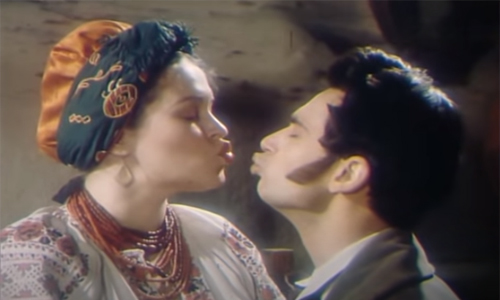

«Москаль-чарівник» — п'єса, яка була написана видатним українським письменником Іваном Петровичем Котляревським у 1819 році. Вперше видана в «Українському збірнику», 1841 року в Москві І. І. Срезневським.
Вперше була поставлена на сцені Полтавського театру. Відомо, що у 1820-их «Наталка Полтавка» та «Москаль-чарівник» з величезним успіхом пройшли в Санкт-Петербурзі в Олександрінському театрі та в Малому театрі, що в Москві.
У 1995 році на кіностудії ім. О. Довженка було знято фільм «Москаль-чарівник», де в головних ролях знялися Богдан Бенюк і Руслана Писанка.
За жанром є водевілем. Котляревський використав мандрівний сюжет про подружню невірність, але переосмислив його. Зберіг лише успішне сценічне, але не використав того, що було б негативно з моральної точки зору.
П'єса економна в плані театральної вистави: прості декорації, 1 дія, 4 персонажі.

Финтик залицяється до Тетяни, але вона чітко дає зрозуміти, що її це не цікавить. У цей момент чоловік Тетяни повертається з відрядження. Вона каже Финтикові ховатися на піч, сама йде зустрічати чоловіка. Несподівано приходить солдат, на підпитку. Він хитрощами починає кепкувати над господарями й обманює їх, ніби він здатен на чудеса.